Build 4.5 — Cross-platform review candidate
Draft for owner review. Not merged or deployed. Automated results and limited native Safari smoke are documented below. Full physical iPhone, Android and installed-PWA certification remains UNVERIFIED / NO-GO. The draft PR records the exact commit and CI checks.
Try the candidate
Use a separate test profile. Existing saves are preserved; do not clear browser storage. These local game links are the current checkout, not a public deployment. Phones need a separately approved HTTPS preview of the exact candidate commit.
Pause → Touch controls: size, movement side, movement/action inset and lift, then Reset touch controls. Rotate during held inputs and use the explicit recovery button. Fullscreen changes also release controls.
Controls: same-size baseline and candidate
Baseline is the verified deployed Build4 commit 0ca1a2b. Captures use native settings and a protected isolated local test profile. Each image links to the original PNG. No artwork was regenerated or replaced.
Southern California — controls and settings
844x390
Southern California: baseline, default controls, 844x390Southern California: candidate, default controls, 844x390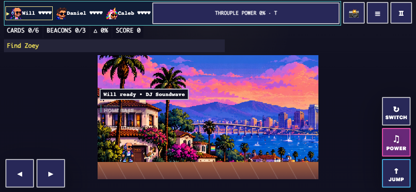
Southern California: candidate, large left-handed controls, maximum requested inset/lift, 844x390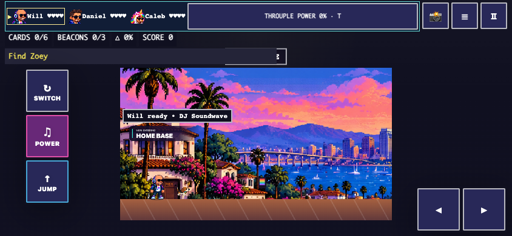
740x240
Southern California: baseline, default controls, 740x240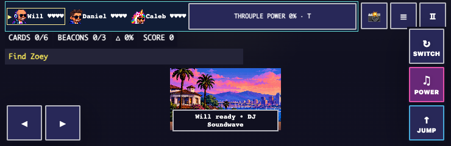
Southern California: candidate, default controls, 740x240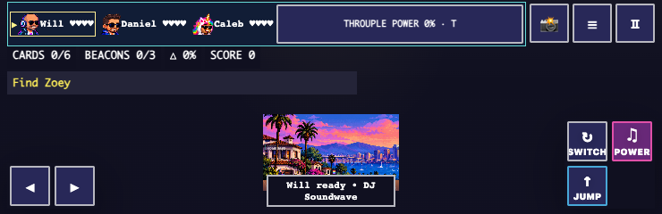
Southern California: candidate, large left-handed controls, maximum requested inset/lift, 740x240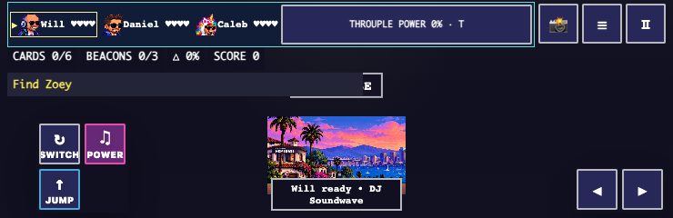
Pause settings at844×390
Southern California: baseline settings (scrollable)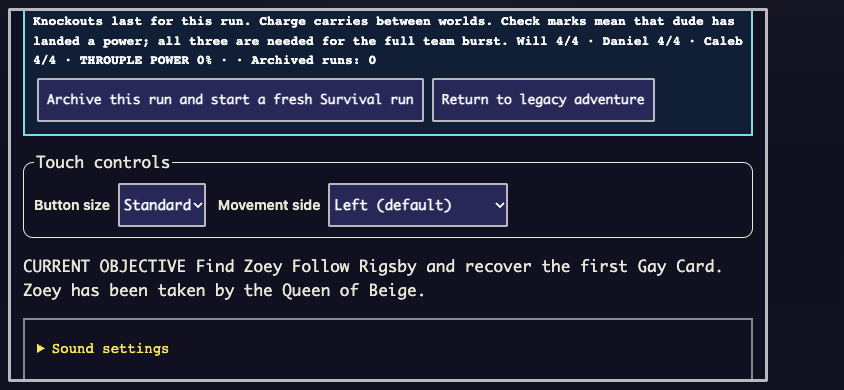
Southern California: candidate settings (scrollable)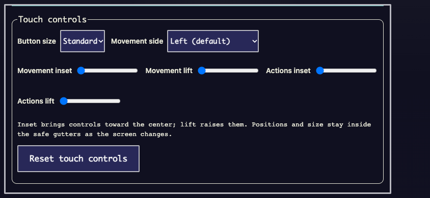
Lake Tahoe — controls and settings
844x390
Lake Tahoe: baseline, default controls, 844x390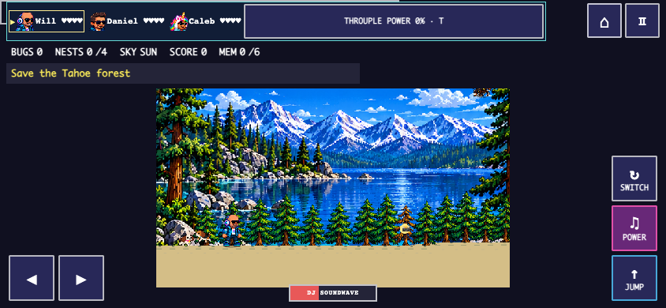
Lake Tahoe: candidate, default controls, 844x390 Lake Tahoe: candidate, large left-handed controls, maximum requested inset/lift, 844x390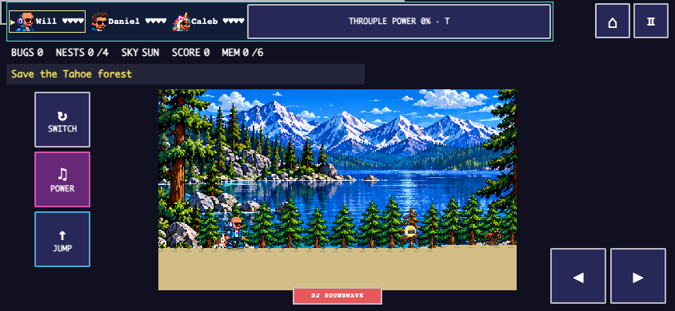
740x240
Lake Tahoe: candidate, large left-handed controls, maximum requested inset/lift, 740x240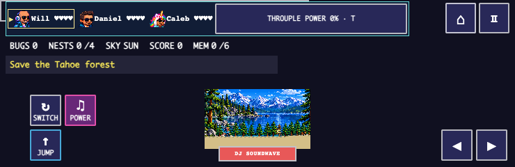
Pause settings at844×390
Alaska — controls and settings
844x390
Alaska: candidate, large left-handed controls, maximum requested inset/lift, 844x390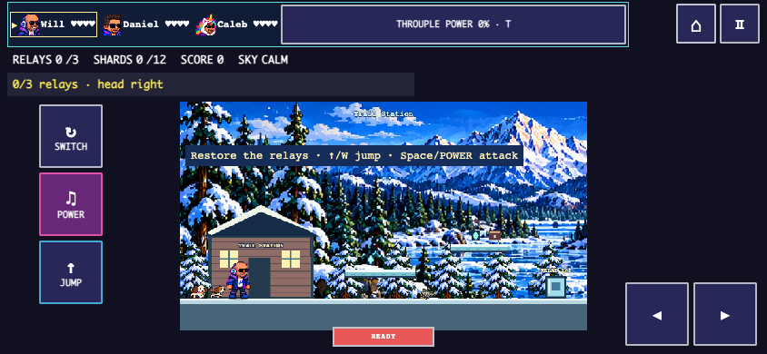
740x240
Alaska: candidate, large left-handed controls, maximum requested inset/lift, 740x240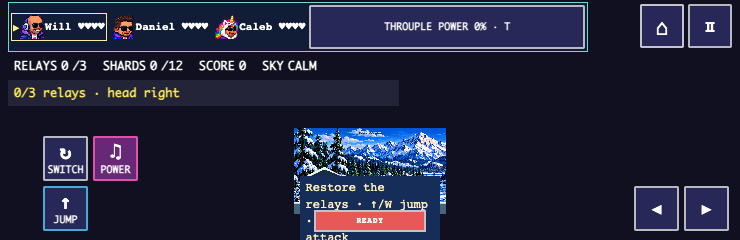
Pause settings at844×390
At740×240 the preserved full1280×720 world is necessarily small. Bounds and minimum target size pass; human readability and thumb comfort still require device testing.
All six bosses at constrained height
Controlled encounter fixtures, not normal-route completion claims. Legacy and Survival,740×240, large left-handed controls with maximum requested positions. The Court wrapping warning has its own reserved HUD line.
Queen of Beige
Court of Supremes
Toxic Bloom
Pine Beetle Queen
Pipeline Meltdown
Frost Queen
Demanding encounters
Matched controlled scenes with native encounter entities and actual team activation. Frame pacing is reported separately from event-to-action latency. See the raw data and methods in the performance report.
Queen of Beige desktop/mobile
Queen of Beige: candidate desktop, controlled encounter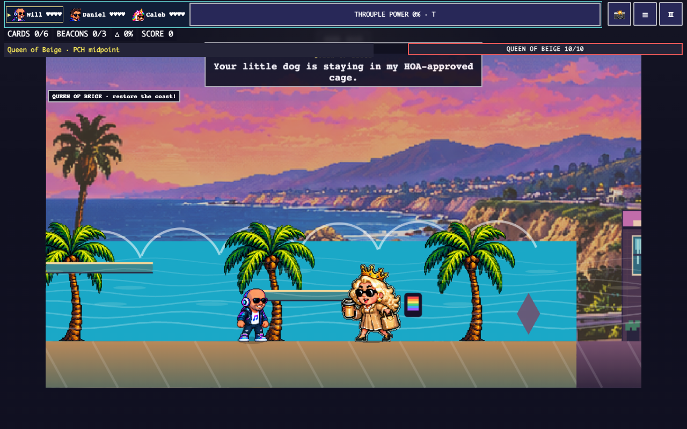
Queen of Beige: candidate mobile, controlled encounter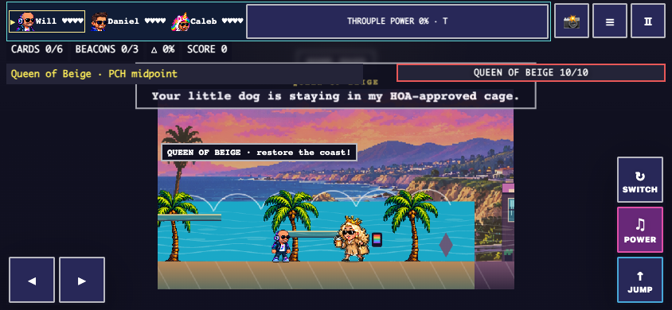
Court of Supremes desktop/mobile
Court of Supremes: candidate desktop, controlled encounter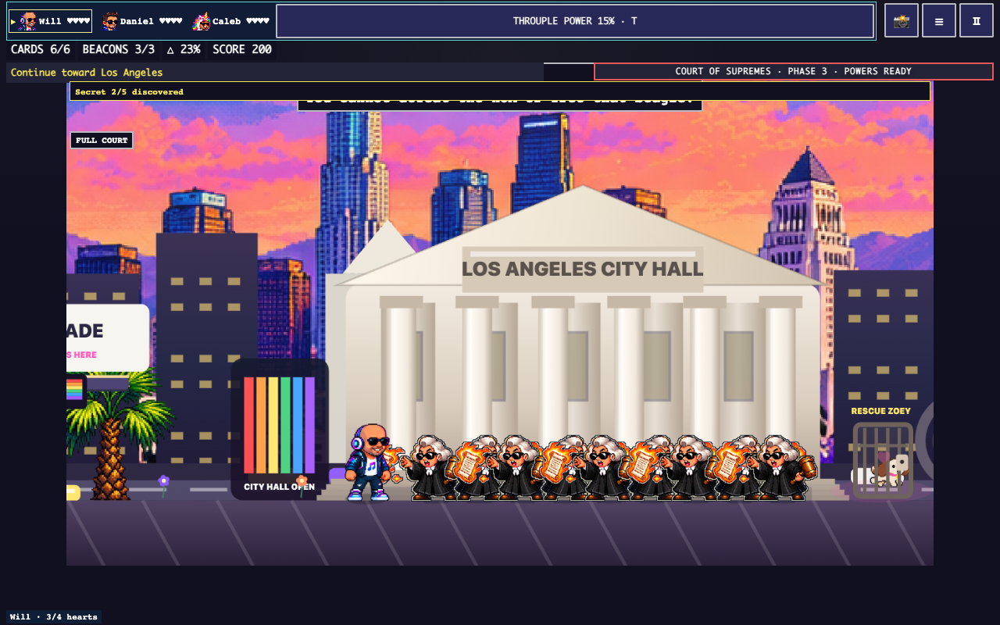
Court of Supremes: candidate mobile, controlled encounter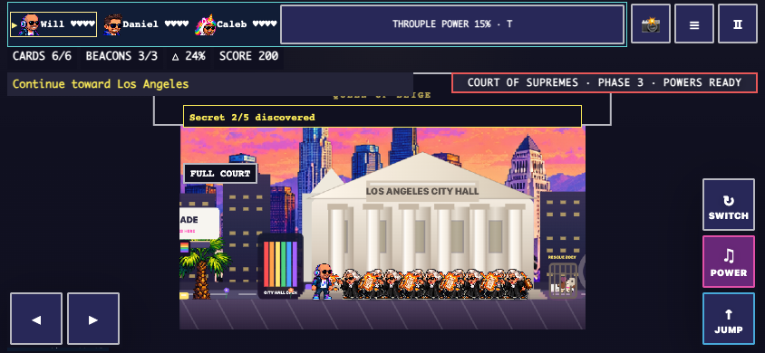
Toxic Bloom desktop/mobile
Pine Beetle Queen desktop/mobile
Pine Beetle Queen: candidate desktop, controlled encounter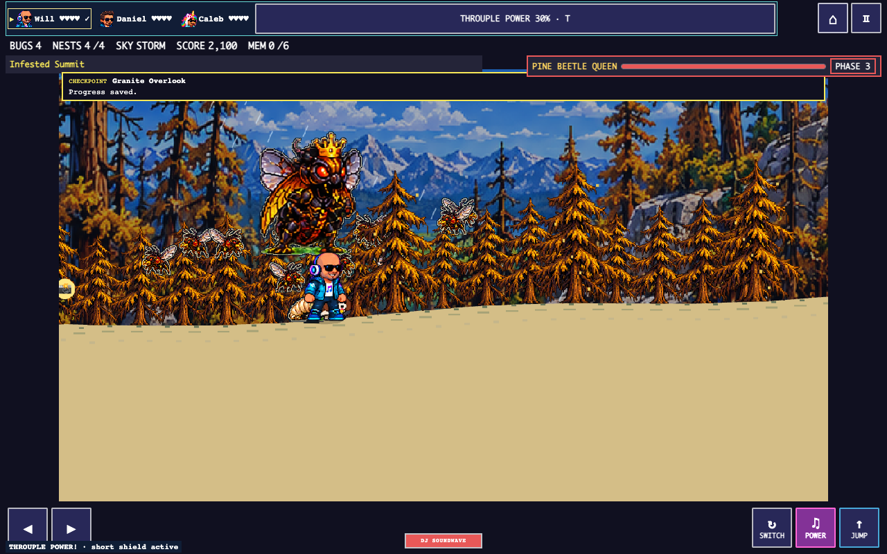
Pine Beetle Queen: candidate mobile, controlled encounter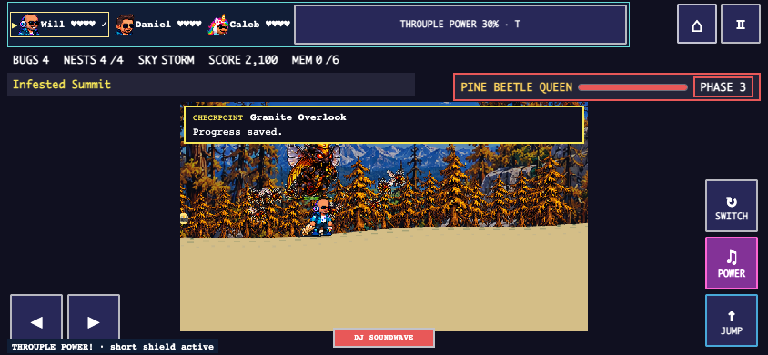
Pipeline Meltdown desktop/mobile
Pipeline Meltdown: candidate desktop, controlled encounter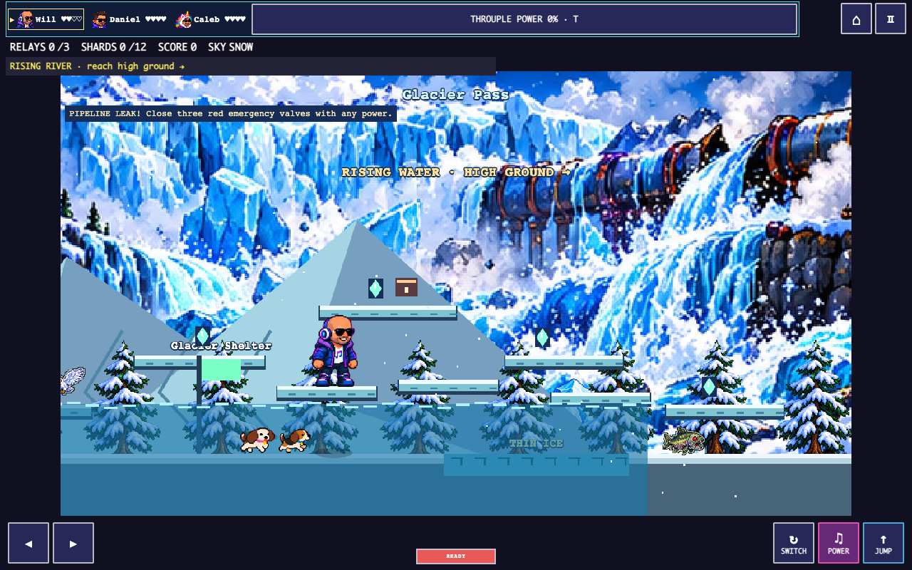
Pipeline Meltdown: candidate mobile, controlled encounter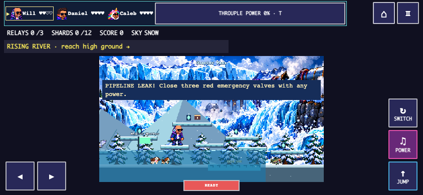
Frost Queen desktop/mobile
Native Safari smoke
Safari27.0.1/macOS27.0.1 in an isolated private window; no browser privacy/security settings changed. Fresh menus, whole-save landing refresh, controls, pause and the same saved team passed. This is limited desktop GUI evidence; no physical-phone, complete native campaign or measured native input-latency claim.
Fresh title: unavailable mode buttons correctly hidden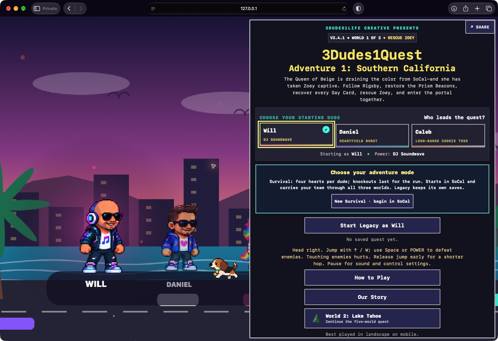
Before: untouched landing falsely freezes for a newer save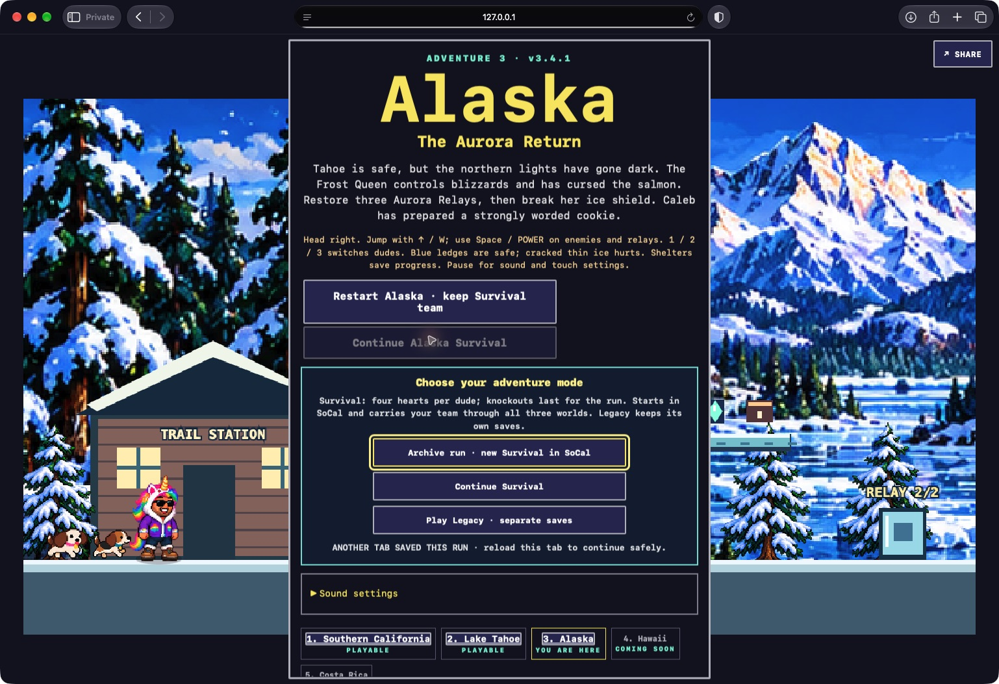
After: untouched landing adopts the complete latest save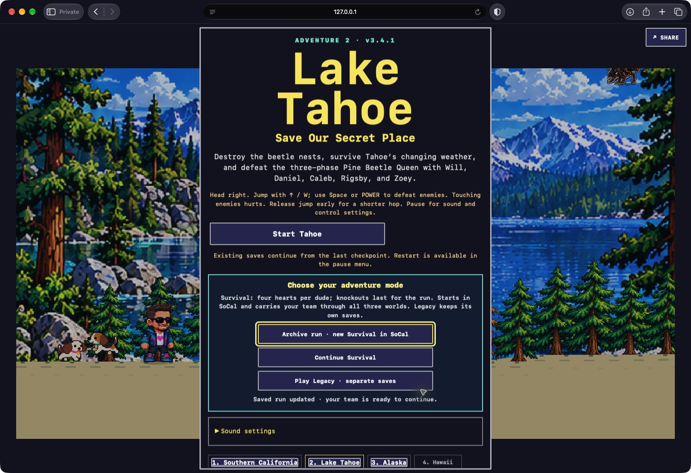
Native SoCal movement/power/switch smoke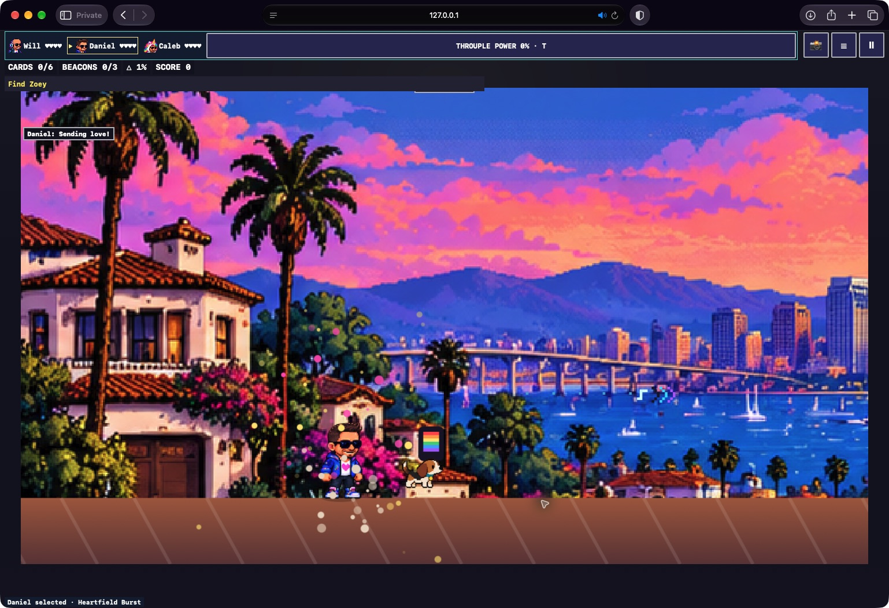
Native Tahoe movement/power/switch smokeNative Alaska movement/power/switch smoke Review decision
GO for draft owner review after automated gates pass. NO-GO for full cross-platform certification until required physical checks pass. Owner approval is separately required for merge and deployment. No follow-on build is started.